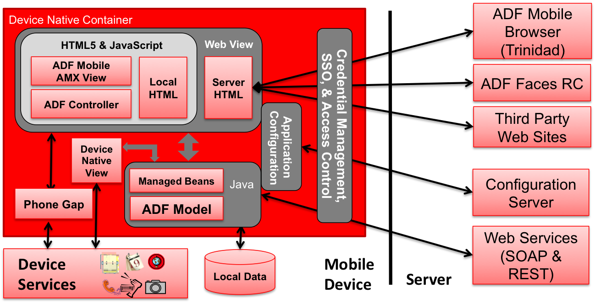

ADF Mobile
Ein Erfahrungsbericht
Enno Schulte & Pascal Brokmeier
OPITZ CONSULTING Deutschland GmbH
Kundenwünsche
- Qualität wie B2C Apps
- Rapide Entwicklung
- Online- / Offline-Support
- Schutz kritischer Unternehmensdaten
Oracle's Herausforderungen
Cross-Plattform Lösung
- Mehrere Plattformen parallel entwickeln
- HTML5 & JavaScript bevorzugte Methode
- Vorreiter: PhoneGap
Wiederverwendung der Skills
- Java EE Umfeld
- Web-Technologien(JSF/JSP)
- Java Skills
Architektur
Entwicklungsweg

Features
Task Flows
- Deklarativ und gewohnt von ADF
- Templating
UI Editing
- Analog zu JSPX-Seiten
- Komponentenbibliothek
- Preview Ansicht
- Binding Layer
- → Drag & Drop
UI Komponenten
- Springboard
- Maps
- Gauges
- List Views
- ...
Gerätezugriff
- phoneGap Funktionen als Data-Control
- Kontakte
- Kamera & Bilder
- Email & SMS
- GPS